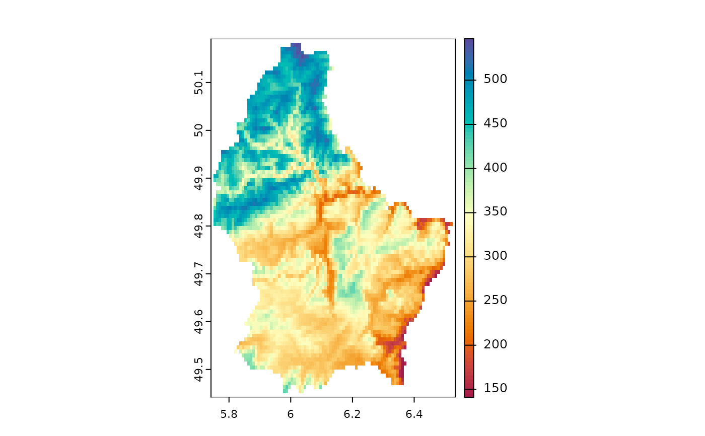

Generate hexadecimal color vectors for use in plotting based on popular color
palettes and packages. Default is 100 viridis colors.
[continuous palettes] n colors are pulled from the desired palette
[discrete palettes] pulls n colors from discrete palette. If the
number of colors requested is within the number of discrete colors,
the values will be pulled without modification starting from the first
value. If more are requested than exist then the palette will be made
continuous
Usage
getColors(
pal = "viridis",
n = 100,
rev = FALSE,
src = NULL,
strategy = c("interpolate")
)Arguments
- pal
character. palette to use. Partial matching with ignored capitalization
- n
numeric. number of colors wanted
- rev
whether to reverse the palette
- src
specific palette package to check
- strategy
one of 'interpolate', 'recycle', or 'cutoff', what strategy to use when more colors are requested than exist for the palette
Examples
f <- system.file("ex/elev.tif", package = "terra")
r <- terra::rast(f)
terra::plot(r, col = getColors(pal = "Spectral", n = 100))
